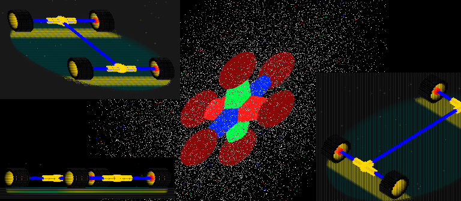
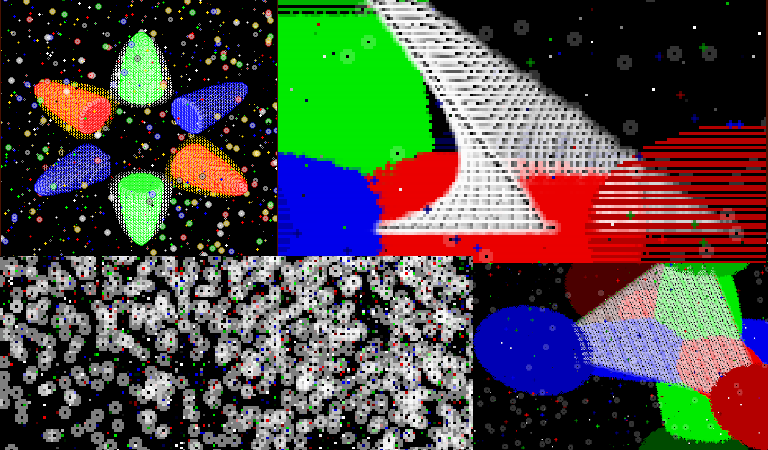
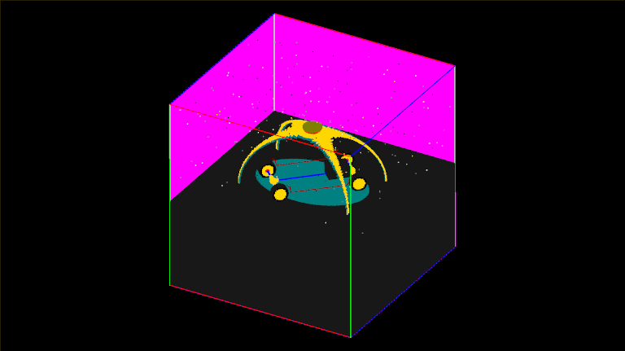
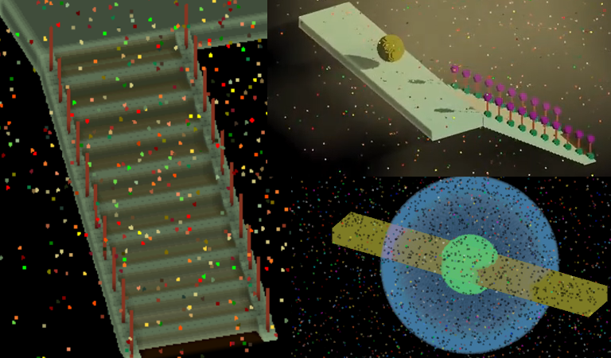
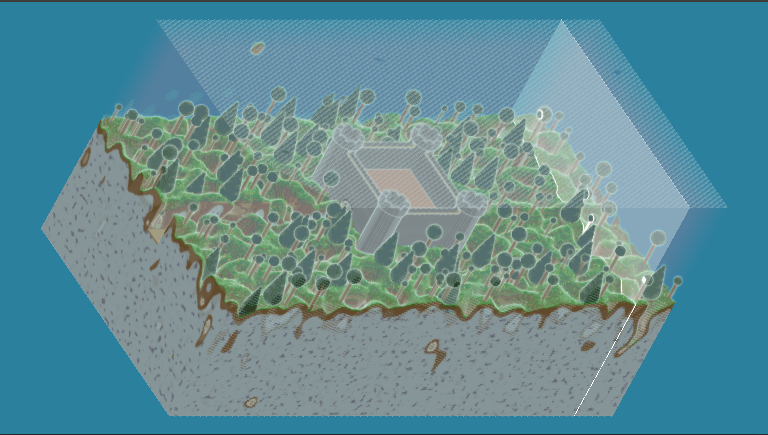
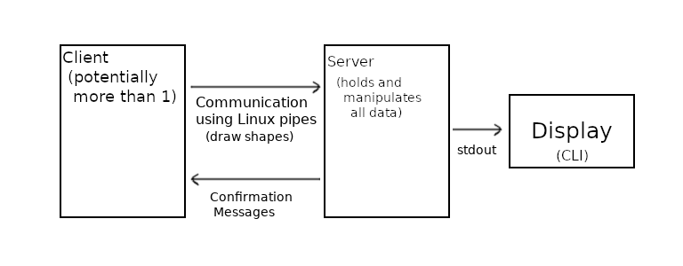

History of Voraldo
The Voraldo project has taken multiple forms over the two odd years I’ve been working on it - some of the ideas go back to some projects in 2014 where I had rendered some heightmaps and figured out the BMP image specification to do some image output. I was very much interested by this sort of grid based representation of space. I had also done some limited stuff with simple OpenGL python bindings to display 3D arrays of points to represent voxel geometry, and made a very low resolution model of the enterprise. I didn’t at that time get deep into what was possible with modern OpenGL. This project has really grown with me, as I've gotten deeper into math, computer science, and computer graphics theory. The general notion of the project is that you want to display voxels, so really at your most basic it’s just something that serves as a viewer, but the specifics on how this was achieved varied greatly, shifting from an offline process which would produce still images, to a realtime, interactive viewer that allows manipulation of the contents of the voxels using compute shaders (for details on the most recent iteration, see the writeup on Voraldo 1.0). Another related endeavor is the 3D CA simulation I did for my graphics class final project, which really served as the basis for how v1.0 used compute shaders.
In the earliest iterations, I used an image processing library called CImg, and simple pixel offsets mapped to x, y and z in a 3 dimensional array - I have a few images here, showing what we’re talking about. The first few versions were relatively similar, changing only really a little bit and experimenting with different ways to represent the colors.
Eventually moving forward, I used some of the drawing primitives offered by CImg, and used their transparency to implement transparency of my own. There are a few worthwhile images produced with that - I liked the look of some of these. But one of the main drawbacks here was the huge redundancy that’s inherent in drawing these primitives over each other, again and again to get the color value for the output pixel. I was still quite limited in the way that I was drawing, because I used simple integer offsets for x, y and z, and iterated through the entire 3 dimensional array to draw all these little circles. At this point, I hadn’t really gotten sufficiently acquainted with the vector math to do anything more advanced.
The next step took significantly longer, which ended up being probably towards the end of 2018 or early 2019. I started to experiment with methods of looking at a ray for each pixel, traced through the voxel space. My first naive implementation took small steps through space, looking to see if there was contents in the space even if it was outside of the block. I came up with an optimization that was really quite significant, in which you first tested that ray against an AABB representing the voxels. In the picture above, there's a couple things going on. Three distinct things can happen, in this context - first, you can have a ray that does not hit the block at all - the pixel associated with this ray will be colored with a background color. Second, the ray can hit the block, and progress through till it hits a colored cell, and the pixel is colored with the color of that cell - the third being the case where you hit all zero-containing cells and these pixels are colored pink. In addition to knowing whether or not you would need to consider that ray, you also had data expressing a near point and a far point along that ray which constituted the near and far intersection points with that bounding box. Once you know that much, you can greatly reduce the amount of sampling you need to do and things get much quicker. Quicker, here, was relative because all of these projects were configured with function calls and the image generation process was offline, so you would open the picture in something else once you finished. My early attempts at lighting were extremely messy and slow because they required recomputation of all of the voxels every frame, as lighting calculations directly effected the color values in the voxel array. It was bad, at times well over a minute or two for a frame for simple images. Animations like these took a good chunk of a day - that being said, you can see the shafts in the light, and the shadows cast by the rotating objects.
Some of the implemented features at this time were a simplified model of ambient occlusion (on the right) and my own calculation of the alpha blending (bottom left). I did some simple volumetric lighting based on the way the ray-based display worked (top left). This was all rendered offline and some of the animations took all day as a single threaded CPU process (video 1) (video 2). The way the color was represented at this point had changed to RGBA values, so that these kinds of effects could be implemented.
That brings us to v0.7 - the first hardware accelerated version of the project. By using an OpenGL based representation, it went from something that was measured in seconds per frame, to frames per second. Although the rendering was much faster, there are certain limitations on what I was able to do with it. The project at this point split into two pieces, which ran separately: gen, which had all the commands to draw geometry into the block and vu, that would allow you to view it. The generation program required you to write long lists of function calls that specified all of the parameters of the geometry you wanted to use. It was not really something someone could be reasonably expected to pick up and interact with without talking to me about how it worked - this is an aspect I have tried to address in v1.0, adding a GUI to allow user interaction in the modelling step with a much lower barrier to entry. The viewer program was kind of cool - it ran relatively well and allowed for some level of interactivity in the ability to rotate the block and pass a variable width slice through the block of geometry as well. This came primarily from the structure of the representation of the geometry - it was held on the GPU as a TEXTURE_3D - using linear texture interpolation, it was sampled in slices by a bunch of quads which ran the long extent of the block. I discovered a limitation of the alpha blending capabilities of OpenGL here in that the composition of multiple transparent triangles must happen in a depth-sorted order - that is, back to front. I came up with some ways to mess with this, by having another set of triangles that faced the other way, and discarding the fragments on the slices that were not front facing. I like this technique and have used it in a couple of different places, because using the discard statement in GLSL, and gl_FrontFacing, you have the ability to do per-fragment backface culling that you can control very easily with uniform variables going into the shader, for example. In this approach though, I still had artifacts when the slices were viewed side on, as the geometry has zero thickness.

I had controls to vary a value between -1 and 1, while your slice width was zero, mapped that to the offset of the slices, to pass through a sort of a highlighted slice. When you get that slice to the area you want to look closer at, you could hit another control to increase the slice width from zero and the geometry would change to reflect only those slices which were within that variable width of your selected slice. Very limited interaction, and not very user friendly. I used it to generate a lot of different models, and if you look in the github repository there’s a lot of different ones to look at. Models are represented as a PNG image, 512 pixels wide, and 256*256 pixels tall. This representation worked well for loading this data straight into an OpenGL 3D texture as a very long byte array.
Experimenting with some more different representations, I looked at some things in VoraldoRealtime which basically went back to the representation of grids of points to represent the voxels. I wanted to better understand the use of different types of textures. The VIVS project was an interesting stab at something closer to what this project has turned into.

Voxelization in the Vertex Shader was the idea, and basically the way this manifested was using uniform arrays of parameters and doing the checking for each point in this dense space against these parametric representations of the geometry, in the vertex shader. Each frame update on the CPU, I generated and animated the parameters of the shapes over time and got the data ready to send each frame. I did a couple of different little demos with this but I again ran into the issue with OpenGL's alpha blending, because here I was still trying to blend of a great number of points in an array, and their depth ordering was violated when you rotated away away from the ideal direction. I experimented with some information in an Inigo Quilez article, called volumetric sort, which talked about keeping multiple copies of your vertex data, ordered in all possible ways, and then checked to see which set of data should be used for the display. I had limited success, there are a large number of cases (48 distinct orderings kept as full copies of all the point data on the GPU) and I was confusing myself on the logic to compute which set of points to use, so I kind of moved away from that idea. The display in v1.0 is handled very differently, pretty far divorced from OpenGL's handling of geometry which again necessitated doing my own alpha blending computation.
The last version to discuss here is v0.8, which implemented a client-server model using some unix interprocess communication stuff (read(), write(), poll()). It supported multiple clients manipulating a voxel block which was held in a server process, but it was relatively limited and I never really developed the idea. I was looking for applications for some things I learned in an Operating Systems class - I never added image output, instead outputting terminal color codes and characters to represent the block in slices. A somewhat similar structure now exists in the way that voxels are manipulated on the GPU, in v1.0 - commands are sent from the GUI, and then the 'server' (GPU) invokes the relevant compute shaders to take action and change the state of the voxel data. I’ll get more into the new shader-based display scheme, and how the rest of the program works, as far as interaction and modeling features, in the writeup on Voraldo 1.0.
Last updated 5/17/2020